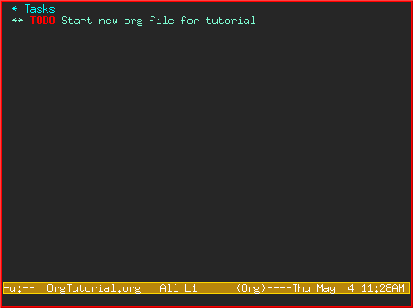
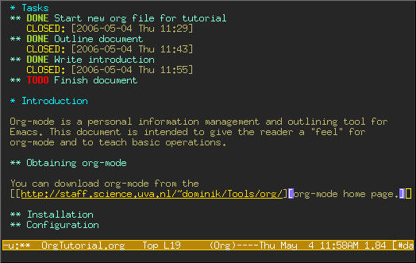
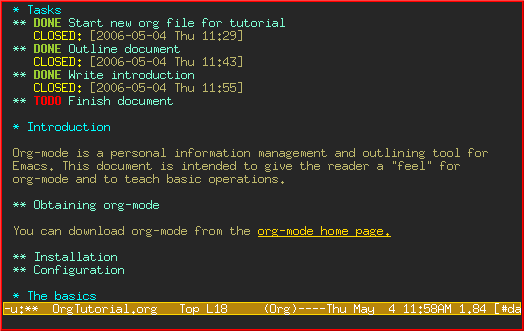
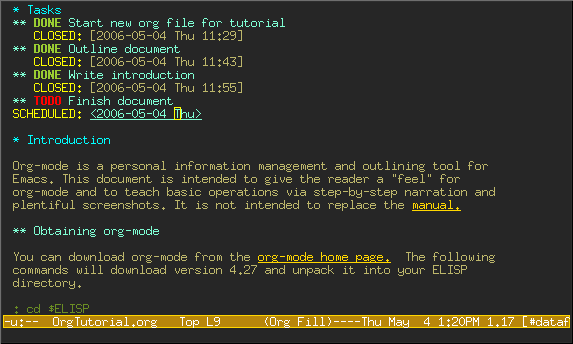

David O'Toole Org tutorial (Traduzido para o Português)
Table of Contents
Este documento é uma tradução para o Português por Ricardo Cosme do tutorial original de David O'Toole.
Introdução
Org-mode é um gerenciador de informação pessoal e uma ferramenta de outlining1 para o Emacs. O objetivo deste documento é introduzir o leitor no uso do org-mode ensinando o básico através de um passo-a-passo acompanhado de imagens. A ideia aqui não é substituir o manual. Somente uma parte das funcionalidades são apresentadas.
Este tutorial foi traduzido para o Francês, Espanhol, Japonês, Chinês, e Coreano. Agradecimentos especiais aos tradutores.
Obtendo org-mode
Org-mode faz parte do Emacs 22 e 23, sendo assim se você tem uma versão moderna do Emacs, você já o tem.
Caso contrário você pode obtê-lo em org-mode home page, descompactá-lo e configurar o load path do Emacs para o diretório lisp do pacote extraído:
(add-to-list 'load-path "PATH_TO_WHERE_YOU_UNPACKED_ORGMODE/lisp")
Ativação
Adicione o seguinte ao seu .emacs:
(require 'org) (define-key global-map "\C-cl" 'org-store-link) (define-key global-map "\C-ca" 'org-agenda) (setq org-log-done t)
Isso vai garantir que o org foi carregado e alguns atalhos básicos de teclado foram definidos. Nós iremos ver adiante neste documento o que "org-store-link" e "org-agenda" fazem.
Mais uma coisa—é melhor configurar à parte um diretório específico onde os seus arquivos org serão armazenados. Eu recomendo usar ~/org.
O básico
Esta seção ilustra um uso básico mostrando o que eu usei do org-mode para criar este documento.
Criando um novo arquivo
Se você configurou o seu arquivo de inicialização do Emacs conforme sugeri acima, o Emacs deveria entrar no org-mode sempre que você visitar ou criar um arquivo com a extensão ".org".
Eu criei um novo arquivo chamado "OrgTutorial.org" e vi o indicador "Org" no modeline, indicando assim que nós entramos no org-mode.
Uma simples lista de tarefas
Primeiramente eu entrei com um headline chamado "Tasks" para armazenar tarefas. Isso não é necessário porém normalmente é conveniente, especialmente quando você quer manter tarefas separadas do corpo do documento que você está escrevendo.
Headlines de primeiro nível começam com uma estrela; segundo nível começam com duas estrelas e assim por diante.
No org-mode, itens TODO são sempre headlines. Eu entrei com um item TODO para "Start new org file for tutorial."

Isso é um pouco bobo, porque eu já comecei o novo arquivo. Sendo assim, vamos marcar o item TODO como DONE movendo o cursor para a linha do item e entrando com C-c C-t, que executará o comando org-todo.
Aqui está o resultado:

Note como o org-mode usa um timestamp para registrar quando o item TODO foi fechado.
Vamos adicionar mais alguns itens TODO. Posicione o cursor na próxima linha e entre com M-shift-RET para chamar org-insert-todo-heading. Você pode entrar com o comando quantas vezes quiser para adicionar TODOs.

Usando headlines para estruturar o documento
Normalmente a melhor forma de organizar as suas ideias é montar um outline1. Meu próximo passo é planejar os tópicos do tutorial. Fazendo isso você quebra a inércia intimidadora da página em branco em uma série de blocos menos intimidadores. Assim se torna mais fácil inserir o conteúdo.
Lembre-se que uma estrela começa um título de primeiro nível, e duas estrelas um título de segundo nível. Se você precisar aninhar mais, vá em frente e use três ou mais estrelas!
Aqui está como ficou após eu terminar o planejamento do documento:

Note que eu marquei "Outline document" como DONE depois que eu terminei.
Preenchendo as seções
Você pode facilmente adicionar um texto abaixo de qualquer título.

Links para outros lugares
Na seção "Obtaining Org-mode" eu precisei prover um link para o site do org-mode. Uma sintaxe especial com colchetes é utilizada para o link:
[[link][description]]
Veja como eu primeiramente entrei com o link e a descrição, deixando em aberto o último colchete:

Então quando eu entro com o último colchete, o link "colapsa" e simplesmente exibe a descrição.

Tente mover o cursor sobre o link e pressione C-c C-o para executar org-open-at-point.
Você também poder fazer um link para arquivos locais. Tente visitar outro arquivo—por exemplo, o seu arquivo de inicialização do Emacs. Então entre com C-c l para chamar org-store-link. Você vai ver uma mensagem que o link foi armazenado para a posição atual no arquivo que você está visitando.
Então volte para o seu buffer org-mode e cole o link usando C-c C-l para chamar org-insert-link. (Você pode necessitar usar as setas para fazer scroll e procurar o link que você acabou de registrar.)
Visão geral de um documento
Neste momento, o meu documento está ficando longo e eu não consigo visualizá-lo por completo em uma tela. Org-mode torna fácil obter uma visão geral do seu documento pressionando shift-TAB.

Note que apenas os títulos de primeiro nível são exibidos. Você pode pressionar novamente shift-TAB para exibir todas os títulos, incluindo os itens TODO:

Então pressione novamente para exibir a visão normal deste documento, com a exibição do corpo das seções:

Adicionando notas a uma tarefa
Você pode colocar o texto que quiser abaixo de um título de um item TODO. Na verdade, você até pode ter subtítulos abaixo de um TODO, e TODOs dentro de TODOs!
Fazer anotações nas tarefas torna mais fácil o processo de coletar links e pensamentos relacionados. Aninhar tarefas é ótimo para modelar o fluxo de trabalho—muitas vezes, uma tarefa grande é quebrada em subtarefas menores que você pode finalizar assim que são concluídas.
Uma amostra de recursos avançados
Antes de terminarmos, nós vamos passar rapidamente pela lista global de TODOs, agendamento, e recursos da agenda. Esses recursos são utilizados para se combinar itens de TODO relevantes que estão em arquivos org distintos em uma visão por priorização e cronologia. Você também pode ver quais tarefas foram completadas e quando.
Configuração
Primeiramente você deve configurar a variável org-agenda-files para que o org-mode conheça quais arquivos buscar por TODOs e itens agendados.
Vamos imaginar que você já tenha diversos arquivos org—digamos, um para o trabalho, outro para casa, e um outro para a escola.
Então você adiciona o seguinte ao seu arquivo de inicialização do Emacs:
(setq org-agenda-files (list "~/org/work.org"
"~/org/school.org"
"~/org/home.org"))
Lista global de TODO
Pressione C-c a t para entrar no lista global TODO. Org-mode vai procurar por arquivos em org-agenda-files e apresentar uma lista de todos os itens de TODO em aberto:

Você pode mover o cursor para um item de TODO diferente, e pressionar "t" para marcar o item como DONE, ou pressionar RET para entrar no arquivo onde o TODO está localizado.
Agendamento de tarefas usando a agenda
Vamos dizer que eu queira agendar "Finish document" para hoje. Eu movo o cursor para a linha depois do item de TODO "Finish document", e pressiono C-c C-s para executar org-schedule. A agenda se abre, e eu posso entrar com uma data ou clicar na data desejada:

Uma vez selecionada a data, org-mode insere um timestamp de agendamento depois do item de TODO:

Agora salve o arquivo, e pressione C-c a a para org-agenda. Uma visão do itens agendados para a semana será exibida:

Agora pressiona "l" (letra minúscula L) para ativar a visão log. Isso exibe todas as tarefas terminadas e o momento em que foram concluídas.

Até mais
Este documento é somente uma breve navegação pelo org-mode. Há mais esperando por você em online org-mode manual.
Footnotes:
"Outline" é um termo em inglês que denota o planejamento de um documento através de um esqueleto a ser preenchido durante o desenvolvimento do mesmo. Estabelecer as seções do documento é uma forma de outline.